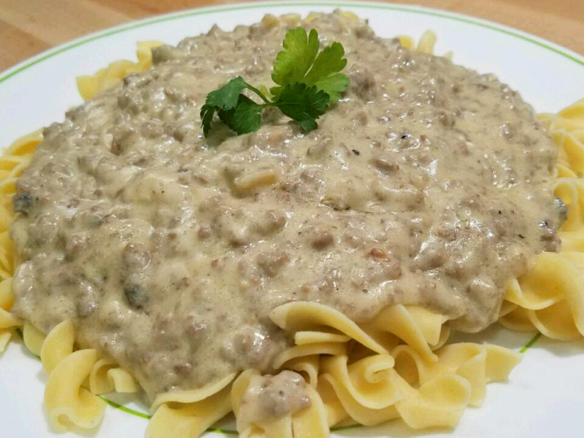

Hamburger Stroganoff

This quick and simple meal by Denny. A
pasta dish in 30 minutes with 6 servings.
A harty creamy beef sauce over cooked pasta is enough to make
a family satisfied. Besure to have your 10 ingredients ready!
- 1 (16 ounce) package egg noodles
- 2 tablespoons butter
- 1 pound ground beef
- 1 onion, chopped
- 1 tablespoon all-purpose flour
- 1 (4.5 ounce) can sliced mushrooms, drained (Optional)
- 1 tablespoon garlic salt
- 1 (10.75 ounce) can cream of mushroom soup (such as Campbell's®)
- 1 (10.75 ounce) can cream of chicken soup (such as Campbell's®)
- 1 cup sour cream
Back to homepage